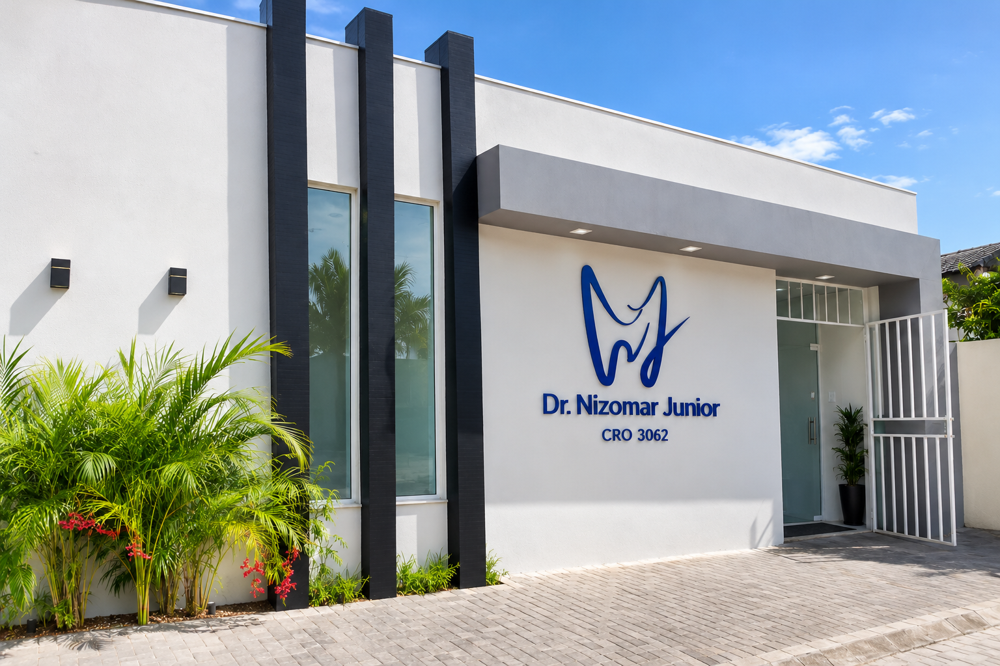
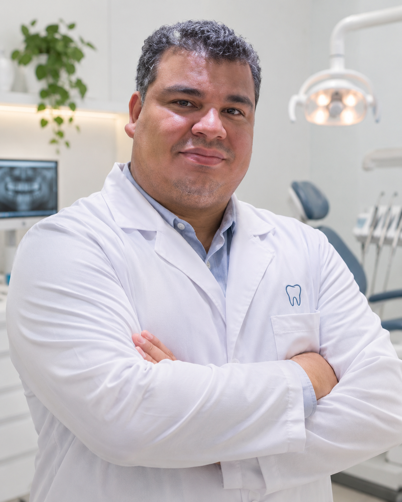

Dentística
Cuidados voltados à saúde, função e estética dos dentes, sempre a partir de uma avaliação individual.
Odontologia em Manaus
Atendimento odontológico com experiência, planejamento individual e atenção aos detalhes — do primeiro contato ao acompanhamento.

Sobre o profissional
Uma trajetória construída com escuta, planejamento individual e atenção aos detalhes.

Uma trajetória dedicada à saúde, à função e à confiança de cada paciente.
Cirurgião-dentista com 20 anos de atuação, o Dr. Nizomar Junior construiu sua prática unindo experiência clínica, atenção aos detalhes e uma escuta cuidadosa das necessidades de cada pessoa.
Pós-graduado em Dentística, Prótese e Ortodontia, dedica-se especialmente à reabilitação oral, buscando recuperar conforto, equilíbrio mastigatório e naturalidade por meio de planejamentos individualizados e orientações claras.
Áreas de atuação
A avaliação inicial ajuda a entender prioridades, possibilidades e o caminho mais adequado para cada caso.
Cuidados voltados à saúde, função e estética dos dentes, sempre a partir de uma avaliação individual.
Planejamento para recuperar conforto, mastigação e harmonia, respeitando as particularidades de cada sorriso.
Acompanhamento para alinhar dentes e melhorar a relação funcional da mordida com segurança e orientação.
A clínica
Um ambiente profissional apresentado de forma direta, com contato facilitado para que cada visita comece de maneira simples e acolhedora.
Sua jornada de cuidado
Envie uma mensagem pelo WhatsApp para combinar o melhor horário.
Converse sobre suas necessidades e entenda as possibilidades de cuidado.
Receba orientações claras sobre as etapas indicadas para o seu caso.
Agendamento
Entre em contato para tirar dúvidas e solicitar uma avaliação.